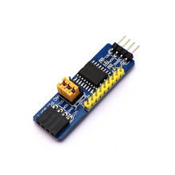

Модуль расширения I/O I2C PCF8574 (PCF8574T)
МодулиКатегория
Модули
Тип микросхемы
I2C I/O-expander, 8 бит
Напряжение питания
2.5–6.0 В
Количество линий GPIO
8 (P0–P7)
Интерфейс
I2C (SCL, SDA)
Выход прерывания
INT, active LOW
Логика портов
квазидвунаправленные
Состояние портов при включении
HIGH по умолчанию
Адресация
8 адресов через A0, A1, A2
Диапазон рабочих температур
−40…+85 °C
Ток потребления в standby
тип. 2.5 µA
Кратко
Это модуль расширения ввода-вывода по I2C на микросхеме PCF8574T. Он позволяет добавить 8 линий GPIO к микроконтроллеру или одноплатному компьютеру.
Описание
PCF8574T — это 8-битный удалённый I/O-экспандер для шины I2C с прерывающим выходом INT. На таких модулях его обычно используют для подключения кнопок, светодиодов, матриц клавиатуры и управления простыми внешними сигналами, когда у основной платы не хватает GPIO. Линии P0–P7 работают как квазидвунаправленные порты: при старте они по умолчанию в состоянии HIGH и могут как считывать входы, так и выдавать уровень на выход. Адрес устройства задаётся тремя выводами A0–A2, что позволяет использовать несколько таких модулей на одной I2C-шине.
Документация
id hw-2026-111